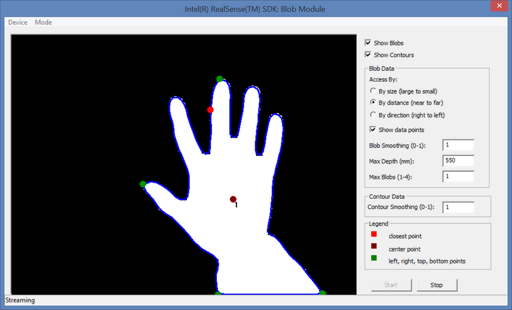

|
The FF_BlobViewer and FF_BlobViewer.cs samples show how to use the SDK utility algorithms for blob and contour extraction.
The main window is shown as in Figure 128. From the menu, you can choose the following items:
| • | Device: Select from a list of I/O devices for streaming. |
| • | Mode: Select whether to do live streaming or playback. If the playback mode is selected, the sample will prompt for the playback file name. |
From the side buttons, you can choose the following options:
| • | Show Blobs: Display the detected blob images. |
| • | Show Contours: Display the detected contour lines. |
| • | Blob Data: You can fine-tune to the blob data detection parameters such as access order, smoothing parameters and max range. |
| • | Contour Data: You can fine-tune the contour detector configuration parameters such as the smoothing parameter. |

Figure 128: Blob Viewer Main Window
|